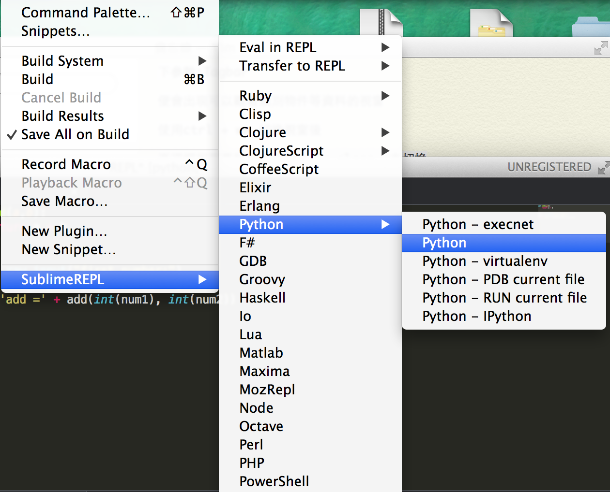
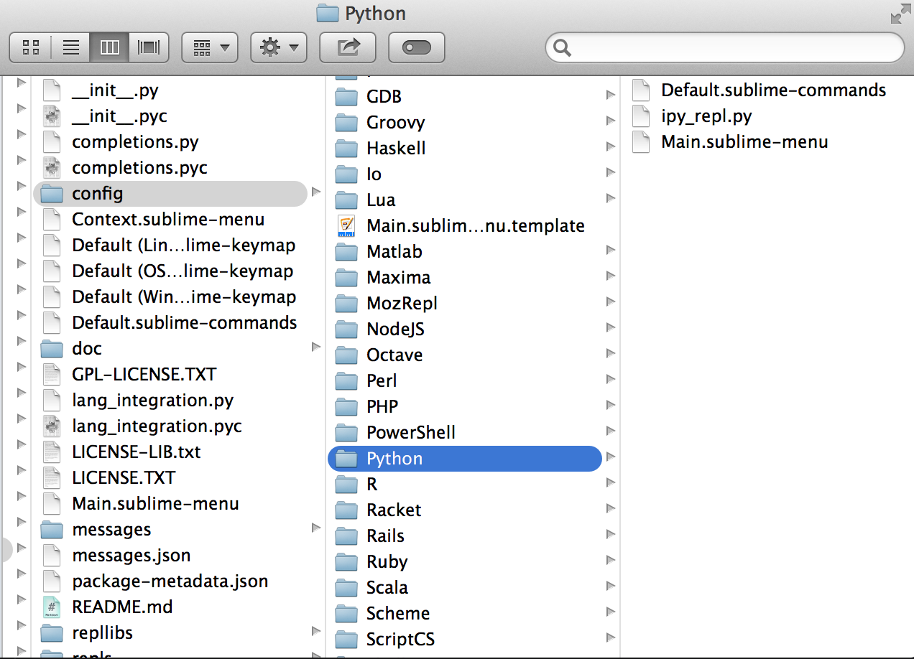
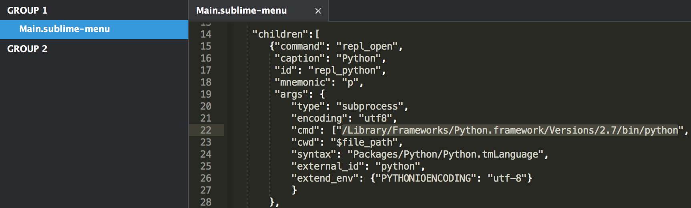
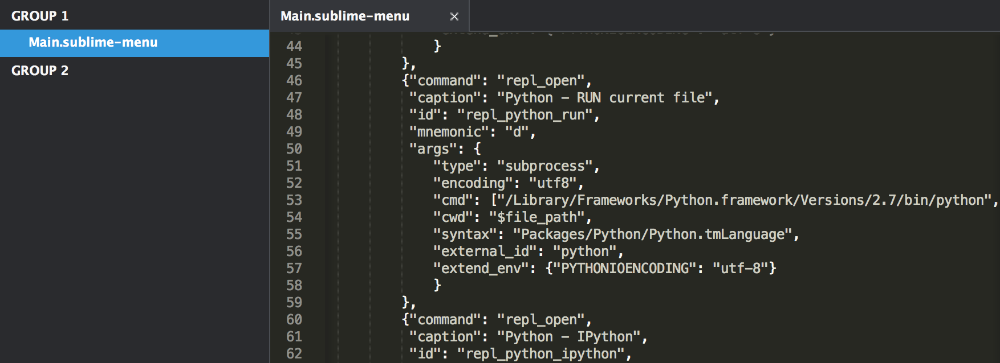
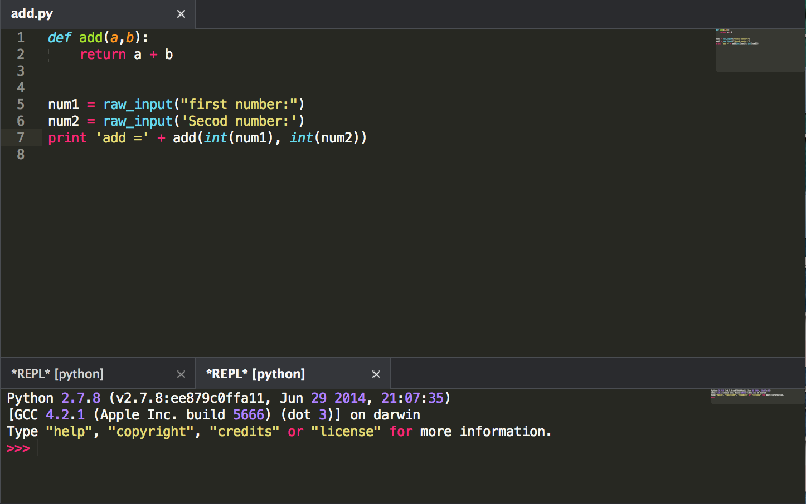

使用 SublimeREPL 解決 Python 在 Sublime 內操作 Termial 控制台時出現 EOF when reading a line
Posted on Wed 18 February 2015 in 編輯器
前言
使用 Sublime 撰寫 Python 程式時，若使用 raw_input 函式，當操作 Sublime 內建的 Termial ( 透過 Command + B ) 啟用 Sublime 的 Python 控制台時，會出現以下錯誤 EOF when reading a line，而本篇會介紹如何解決此問題。
如何處理
其實上述中提到的問題 EOF when reading a line 是因為 Sublime 沒有支援輸入的參數。

其實這個問題可以透過一個插件 - SublimeREPL 來處理。 SublimeREPL 中的 REPL 全名為 read-evaluation-print-loop，負責處理解釋型語言編譯運行的過程。裝了 SublimeREPL 插件後也支持了編輯器上直接的編譯運行和交互。
安裝 SublimeREPL
SublimeREPL 是一個可以提供許多 Sublime 可以執行許多腳本語言的直譯器環境，在套件官網的介紹有提到，像是 Lua, NodeJS, Python, R, Ruby, Scala ... 等皆可：
Run an interpreter inside ST2 (Clojure, CoffeeScript, F#, Groovy, Haskell, Lua, MozRepl, NodeJS, Python, R, Ruby, Scala, shell or configure one yourself)
因此也提供了可以在 Sublime 中執行 Python 直譯器的環境，也可以如在 Terminal 下執行。
安裝步驟與使用方式
- 在 Sublime 的控制台中安裝
Package Control - 鍵盤按下
Shift + Command + P開啟指令面板 ( Command Palette )，輸入Install Package並按下確認後，再輸入SublimeREPL安裝並重啟即可。
開啟後在點選 Tool > 選擇 SublimeREPL > Python，如果要執行現在的檔案 選擇 run current file 或是直些啟動 Python 終端機 :

Python 版本設定
因為 Mac 本身內建 Python，而其版本並非後來安裝的版本，因此如果你想要使用自己下載的 Python 可以做一些設定來修改應的版本。
1. 開啟 Main.sublime-menu 檔案
點選 Browse Package，並進入到 Package 目錄下，接著依序尋找 SublimeREPL > config > Python > Main.sublime-menu，找到 Main.sublime-menu 後開啟。
若是在 Mac 中路徑如下 :

2. 編輯 cmd 的參數
開啟此份文件後，你會發現他有四個 caption Key 值，分別對應到的變數 Sublime 中 SublimeREPL 列表下 Python 顯示的六種執行直譯器方式，如下圖：
因此我們可以針對不同執行 Python 直譯器的使用方式選擇所要的 Python 版本，並修改 cmd 的第一個參數值即可。
3. 修改 Sublime 中的 PythonTerminal 直譯器版本
例如，若要直接修改 Sublime 中啟用的 Python 直譯器（類似 Terminal 的方式)。
(1.) 尋找 caption 為 Python 的數值
caption 的數值便是顯示在在 Sublime 中實際顯示在軟體上的文字，因此變透過此文字尋找你要修改的類型。
(2.) 修改 cmd 第一個參數
cmd 的第一個參數是 Python 直譯器的路徑，並且預設的 Python 參數會去撈取預設的 Mac Python，因此若有需要，可以把第一個參數修改成自己安裝的 Python 版本，例如自己安裝的 Python 版本所在的路徑是：
/Library/Frameworks/Python.framework/Versions/2.7/bin/python

4. 修改 Sublime 中的目前 Python 檔案執行所要的版本
若是要修改目前正在開發的 Python 檔案所使用的 Python 直譯器版本，可以選擇 Python – RUN current file 的 caption 數值，並且一樣的修改 cmd 參數即可，如下：

完成後，再透過 Tool > SublimeREPL，選擇 Python 或是 Python – RUN current file 執行一次即可 :

附註 – 使 Python 直譯器的執行畫面不會開視窗的處理
這樣另開一個視窗不太方便，此時便可以選擇 View > Layout 來選擇想要切分的畫面。自己習慣分成上下兩個的視窗，所以選 ROW
或是輸入：
shift + alt + command + 2
亦可以切割成上下兩個視窗。
補上參數 -i 進行終端機互動
如果補上參數 -i 則可以使程式在直譯完後，進入終端機的互動模式。
以下是官方介紹：
When a script is passed as first argument or the -c option is used, enter interactive mode after executing the script or the command, even when sys.stdin does not appear to be a terminal. The PYTHONSTARTUP file is not read.
This can be useful to inspect global variables or a stack trace when a script raises an exception. See also PYTHONINSPECT.
因此我們可以開啟 Main.sublime-menu 並在 cmd指令的參數中，加上 -i 來與 Terminal 互動。